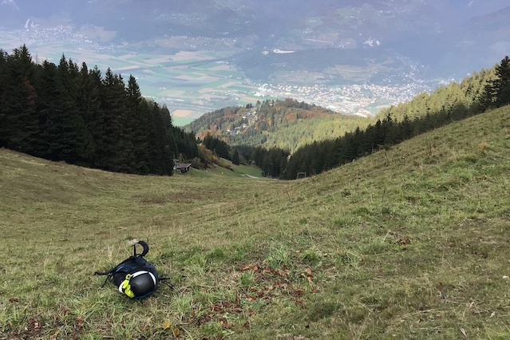
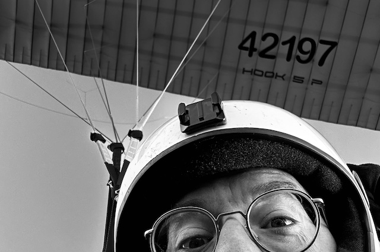

Niviuk Naktuk
A propos
Mon carnet de vol
Catégories
Tous
(3)
hook5p
(3)
Voici les publications.
Un grand vol depuis Bellevue en plein été indien
hook5p
C’était le 30 oct. 2022. Je suis parti de la région de Pointe de Bellevue-2030 à 10:53:00 et j’ai atterri dans la région de Mayen pour un durée de vol de 00:22:00. J’ai volé 1 fois dans la journée. J’ai ressenti énormément de joie.
30/10/2022
Nicolas Bressoud

Un deuxième vol en deux jours d’affilée !
hook5p
C’était le 19 oct. 2022. Je suis parti de la région de Valerette à 16:36:00 et j’ai atterri dans la région de Monthey, Pont Rouge pour un durée de vol de 00:15:00. J’ai volé 1 fois dans la journée. J’ai ressenti énormément de joie.
19/10/2022
Nicolas Bressoud

Mon premier vol de 2022 !!
hook5p
C’était le 18 oct. 2022. Je suis parti de la région de Valerette à 17:40:00 et j’ai atterri dans la région de Monthey, Pont Rouge pour un durée de vol de 00:14:00. J’ai volé 1 fois dans la journée. J’ai ressenti beaucoup de joie.
18/10/2022
Nicolas Bressoud
Aucun article correspondant